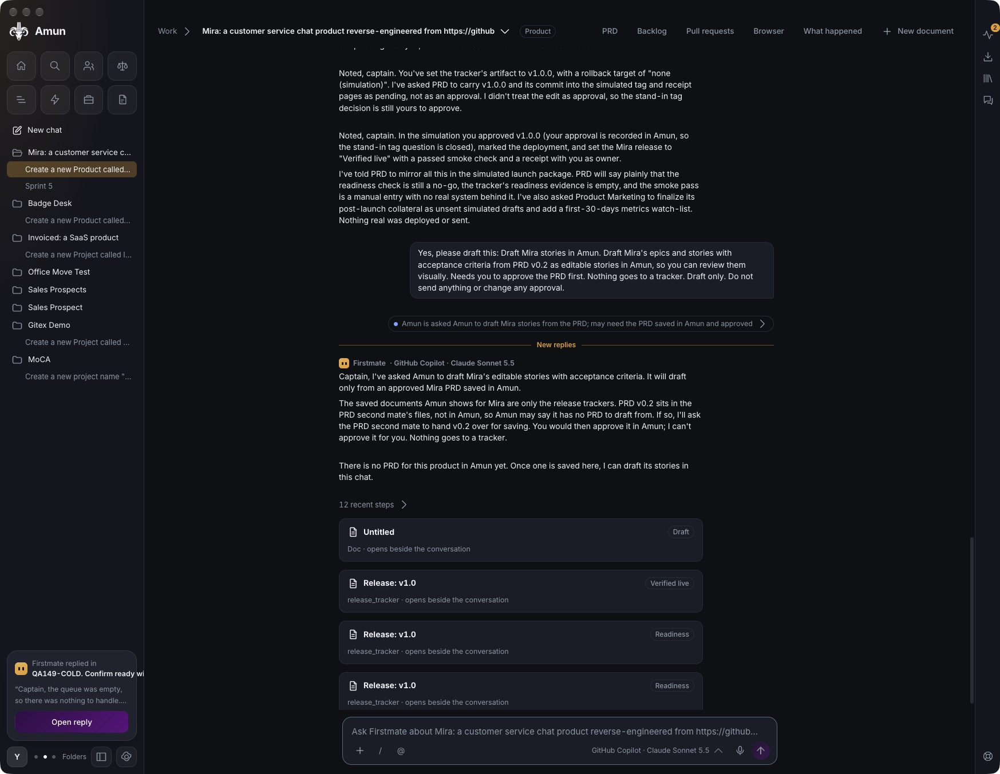
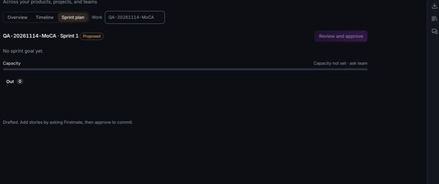

You type “Create a new Product called Mira …” anywhere. Amun files a Product, Project or Initiative folder in about 3 seconds and starts its first chat. Duplicates ask “Open / Create another”. A request typed inside another folder gets a “Move to a new folder / Keep it here” card.
Known bugs: names swallow text after a colon (“Invoiced: a SaaS product”), some replies are lost, and near-duplicates slip through (test report A1, A4, B7).

2 · Discovery
Firstmate hands the idea to the Product Manager crew member, who runs why-probes, asks question cards and pulls in specialists. You watch them on the Agents screen.
Proven: PRD in about 3 minutes, research and wireframes delivered. Gap: question cards don’t reach “Needs your attention”, and busy crew can look idle (B4, B9).

3 · Draft PRD lands in Amun
When the crew reports a PRD with the request’s reference, Amun files it as PRD v1 in the Library and the PRD tab. It worked for Badge Desk. For Mira the PRD stayed in the crew’s files, so Amun says “There is no PRD for this product in Amun yet”. A project’s BRD has no PRD tab at all.

4 · Approve the PRD?
The PRD tab shows the version, coverage checklist and an Approve button. Approval binds to that exact version, so an edit after approval shows “Changed since approval”. Proven on Badge Desk.
prd-view.tsx
5 · Draft epics and stories
From an approved PRD, Amun drafts epics, stories, acceptance criteria and the first-release slice, about 5 minutes for 11 stories and 34 tasks. You edit them in the PRD review. Products only: a project (Invoiced) is refused with “this work is not a product”.
| Epic | Story | Acceptance | First release |
|---|---|---|---|
| Check-in | Scan a badge at the door | 3 ▸ | Yes |
| Check-in | Print a visitor badge | 2 ▸ | Yes |
| Reports | Daily attendance export | 2 ▸ | Later |
6 · Backlog grooming
Azure DevOps: connect a project, pick team and level, see the live backlog as list or board. Proven. Jira and Linear: the Stories tab (PR #61) lists epics and stories after publishing, but only on products and not yet checked in the app. There is no place to reorder, split or estimate stories in Amun before they go to a tool.
| ID | Title | State | Sprint |
|---|---|---|---|
| 1241 | Login with company account | Active | Sprint 5 |
| 1242 | Reset password | New | — |
7 · Plan the sprint
A draft sprint can be staged in Amun (“Add 1 story to Sprint 5”, Undo, nothing sent). But a sprint kept in Amun that actually holds stories is not built (handoff item 4), so a draft sprint stays empty unless the stories already live in a tool.

8 · Approve the plan and publish
Jira, proven: 4 epics, 12 tasks and “Badge Desk Sprint 1” created in 41 s with read-back. Linear, broken: Firstmate wrote the Invoiced plan (10 epics, 31 stories) but Amun dropped it (PR #66), so no approval card appeared. Azure DevOps: governed writes exist in the code. Sprint 5 is read-only by your rule, so it is not tested in this flow. The plan card lists summaries only, without each item’s parent, sprint or destination.

9 · Receipt back in the chat
After publishing, nothing tells the chat or Firstmate what was created, and the request stays “waiting”. The spec asks for a receipt with each item’s ID in the chat that made the request.
10 · Watch stories move
Azure DevOps, proven: overview, then Sprint 5 detail with goal → blockers → stories by real status. Jira and Linear sprints come from PR #61, not yet checked in the app. Bug: the overview counts only the selected sprint (0/0 vs 0/2). With no tool connected the screen is empty.

11 · Mark stories Done
Status is only read from the tool. Without one there is no way to mark a story done: the Stories tab says “Link this product to Azure DevOps” and readiness stays “0/0 stories done”. Firstmate confirmed “you can’t yet” (test report B5).
12 · Epics close
No roll-up exists. Epics are read as titles with their stories. Nothing counts “4 of 4 done” or marks an epic closed, in Amun or back in the tool.
13 · Ready to release?
The release card works by hand and binds the exact version and SHA with an owner receipt. But it doesn’t check readiness: you can schedule at 0/0 stories done. Steps stay clickable after Verified live. There is no post-launch step, and each save made a new card (the three “Release v1.0” cards).

14 · Close stories and epics after release
A release is not linked to the stories it ships, so “Verified live” changes nothing in Jira, Linear or Azure DevOps.
15 · PRD / feature Done
A PRD can be Draft or Approved, never Done or Delivered. Nothing marks the feature complete.
16 · Roadmap shows it
Roadmap tiles are placed by hand or by an approved plan and can be committed. They are not tied to the PRD, epics or release, so a shipped feature never moves or turns Done by itself.
Roadmap in screens.tsx
Now
Next
Later
The path to here breaks at steps 9, 11, 12, 14 and 15. Each of those needs a link Amun doesn’t keep yet: PRD ↔ epics ↔ stories ↔ release ↔ roadmap item.
What would close the loop, in order
- One chain of IDs: PRD version → epics → stories → sprint → release → roadmap item, kept in Amun’s store. Everything below depends on it.
- Fix the dropped plan (PR #66) and add the publish receipt (step 9), so Linear works like Jira.
- Stories for projects (BRD → stories), not products only.
- Story status sync from Jira, Linear and Azure DevOps, plus a Done action for stories kept only in Amun (step 11).
- Roll-ups: epic closes when its stories are done; the release checks readiness and closes its stories; the PRD becomes Delivered; the Roadmap tile shows progress and moves to Done (steps 12–16).
Compare with the original requirements →
This page shows what exists; it proposes no screens. Once you agree the chain, I’ll draw the missing steps as a before/after for approval.